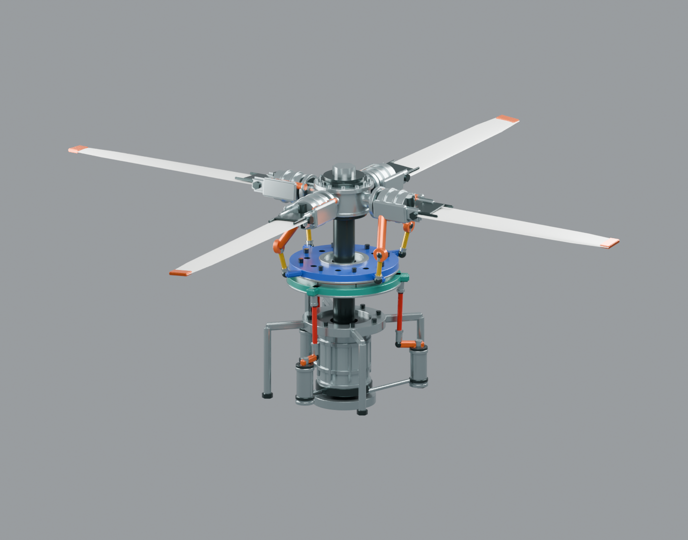

✣
ROTOR
LAB
旋翼头与倾斜盘
/ 交互实验台
MECHANISM STUDY / 002
教学原型
视觉与运动近似 · 不提供可加工尺寸 · 不能用于制造、维修、飞行安全或适航判断
结构与假设 ↗
FOUR-BLADE ROTOR / SWASHPLATE
把控制，传给旋转。
橙色变距臂
蓝色旋转盘
黄色连杆
载入机构…

三维模型暂时无法加载
仍可查看静态结构。请确认通过本地服务器打开页面。
重新加载
立体
全景
正视
俯视
倾斜盘
桨根
↺
拖动旋转 · 滚轮 / 双指缩放
完整机构
实时桨距
角度 / °
01
—
02
—
03
—
04
—
盘俯仰
—
盘横滚
—
抬升
—